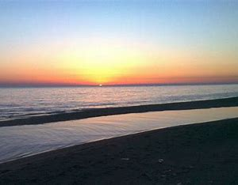

get to know georgia
ურეკი — დაბა და საზღვაო კურორტი საქართველოში, გურიის მხარის ოზურგეთის მუნიციპალიტეტში. მდებარეობს შავი ზღვის სანაპიროზე, ზღვის დონიდან 4 მ., ოზურგეთიდან 24 კმ. ჩრდილოეთიდან და სამხრეთიდან შემოსაზღვრულია მდინარეების სეფასა და სუფსის შესართავებით, ხოლო აღმოსავლეთიდან აკრავს წვერმაღალას მთა. ურეკში არის რკინიგზის სადგური, გადის საავტომობილო მაგისტრალი ს2, მოქმედებს საბავშვო ბაღი, საჯარო სკოლა, სასტუმროები და სხვა დაწესებულებები.
არსებობს თქმულება, რასაც მეცნიერთა ნაწილი ეთანხმება, რომ ურეკი ნიშნავს, ტყიან გაუვალ ადგილს, სადაც მონადირეებს უჭირდათ ნადირობა. მთიან სამეგრელოში არსებული მიკროტოპონიმი „ნა-ეკ-ურ-ა“ ამტკიცებს ურეკის განმარტებას, როგორც ღრმა, გაუვალი ადგილისა.
არქეოლოგიური გამოკვლევები ადასტურებენ, რომ ურეკის ზღვისპირა მიდამოები, ე.წ. „ნაზურგები“ ძველი დროიდანვე დასახლებული პუნქტი იყო. მდინარე სუფსის შესართავთან სხვადასხვა დროს აღმოჩნდა ბრინჯაოს ნივთების რამდენიმე განძი, რომელიც ცნობილია ურეკის განძის სახელით. დათარიღებაში აზრთა სხვადასხვაობაა: ძვ. წ. XVIII, ძვ. წ. XVII სს. (დ. ქორიძე და ა. რამიშვილი), ძვ. წ. II ათასწლეულის I ნახევარი (ო. ჯაფარიძე), ძვ. წ. XV, ძვ. წ. XIV სს. (თ. მიქელაძე). განძი მნიშვნელოვანია კოლხური ბრინჯაოს პერიოდიზაციის, წარმომავლობისა და ტიპოლოგიური ევოლუციის თვალსაზრისით. 1942 წელს ზღვისპირა დიუნის ყრილში ნაპოვნია გვიანანტიკური ხანის ნივთების განძი, რომელიც შეიცავდა III საუკუნის დასასრულის და IV საუკუნის დასაწყისის სამარხეულ ინვენტარს. არქეოლოგი ნინო ხოშტარია ამტკიცებდა, რომ ურეკის მაგნეტიტი გამოიყენებოდა რკინის სადნობ ნედლეულად რკინის ხანაში.[
XVIII საუკუნის დასაწყისში მდინარე სეფისწყლის შესართავთან აგებულ იქნა სეფის ციხე. 1804 წლისთვის ციხეში იდგა ოსმალეთის იმპერიის გარნიზონი
1931 წელს ურეკში მოეწყო ციტრუსების მეურნეობა 489 ჰექტარზე.[6] 1936, 1938 და 1948 წლებში ურეკში არქეოლოგიური სადაზვერვო გათხრები ჩატარდა, რომელთა დროსაც აღმოჩენილ იქნა ურეკის განძი. 1944 წელს დაიწყო მაგნეტიტის მოპოვება. მაგნეტიტს გერმანელი ტყვეები, რომელთა ბანაკიც ურეკში იყო, ტვირთავდნენ რუსთავის მეტალურგიული კომბინატისთვის. მათ შორის ერთ-ერთი იყო ერიხ ანდერე, მეცნიერი, რომელსაც აწუხებდა გულ-სისხლძარღვთა დაავადებები და მძიმე ართრიტი. მან აღმოაჩინა, რომ ურეკის მაგნეტიტი მასზე დადებითად მოქმედებდა და ამის შესახებ აცნობა საბჭოთა ხელისუფლებას. 1949 წელს მიღებულ იქნა გადაწყვეტილება ქობულეთიდან ფოთამდე გურიის საზღვაო ზოლში საკურორტო ზოლის მოწყობის შესახებ, 50 კმ სიგრძის მანძილზე გაშენდა ბიჭვინთის ფიჭვის კორომი. ურეკში, მაგნეტიტის უბანში დაიწყო საზღვაო კურორტის მშენებლობა, მოეწყო გამწვანება, სკვერი, გზები, ელექტროფიკაცია. 1953 წელს ურეკს მიენიჭა დაბის სტატუსი. 1955 წელს აღმოჩნდა მაგნეტიტის ახალი ქვიშები. 1963 წელს ჩატარდა პირველი ეპიზოდური დაკვირვებები. 1977 წელს დაიწყო ურეკის საკურორტო ფაქტორების მიზანდასახული კვლევა. 1987 წელს აშენდა რვასართულიანი დასასვენებელი სახლი „მთის ბროლი“.
ზღვისპირა კლიმატური კურორტია. ჰავა ზღვის სუბტროპიკულია, იცის თბილი უთოვლო ზამთარი და ცხელი ზაფხული. ჰაერის საშუალო წლიური ტემპერატურა 14,5 °C, იანვრის საშუალო ტემპერატურა 5,8 °C, ივლისის საშუალო ტემპერატურაა 22,6 °C. ნალექები 2080 მმ წელიწადში.
გამორჩეულია მაგნიტური თვისებების მქონე ქვიშით. სასარგებლოა გულ-სისლძარღვთა სისტემის, სუნთქვის ორგანოების და საყრდენ-მამოძრავებელი ორგანოების, ნევროზის სამკურნალოდ. ძირითადი სამკურნალო ფაქტორებია ზღვის ჰავა და სილიანი პლაჟი. ზღვის სიღრმე დიდ მანძილზე მცირეა, რაც განსაკუთრებით ხელსაყრელია ბავშვების ბანაობისთვის. პლაჟის სილა შეიცავს დიდი რაოდენობით მაგნეტიტის ნაწილაკებს. ურეკის მიდამოებში აღინიშნება მომატებული მაგნიტური ველი, რაც ბუნებრივ სამკურნალო ფაქტორად არის აღიარებული.
კურორტ ურეკის ერთ-ერთი უბანია მაგნეტიტი, რომელსაც ეს სახელი ეწოდა მაგნეტიტის რკინის შემცველი სილების გამო. მაგნეტიტი მდებარეობს მდინარეების, კუჩხასა და სეფას შორის და გაშლილია 2-2,5 კმ. სიგრძისა და 500-600 მ. სიგანის ტერიტორიაზე. მაგნეტიტის პლაჟი სიგრძით 1-1,5 კილომეტრია, სიგანით კი 60-80 მეტრი. ზღვის დონე ნაპირთან დაბალია და 20-40 მეტრის მანძილზე ადამიანს ყელამდე არ სწვდება. სანაპირო შედგება წვრილმარცვლოვანი სილისაგან, რომელშიც არის 2-7 %-მდე რკინის მაგნეტიტური მადანი.[7]
.jpg)